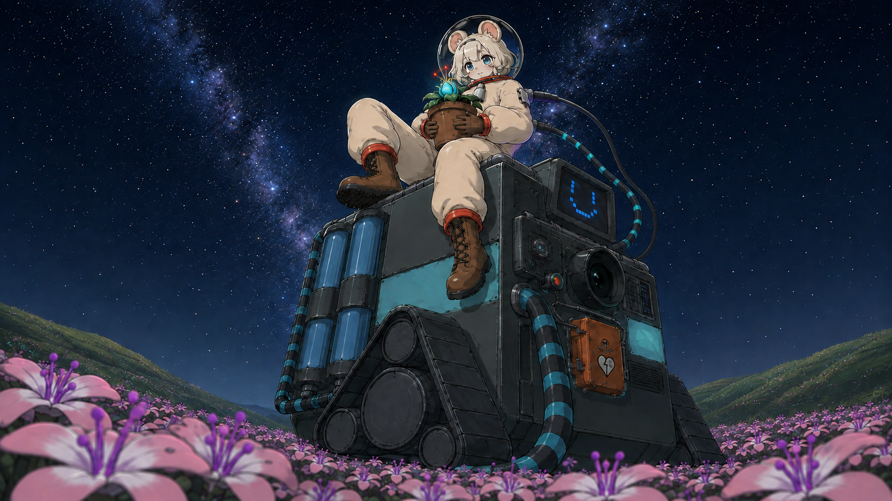
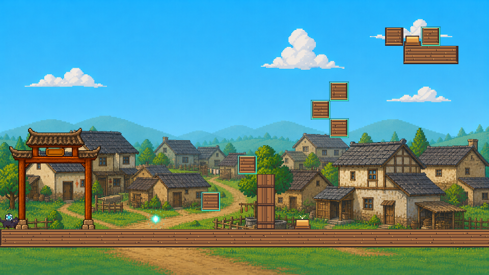
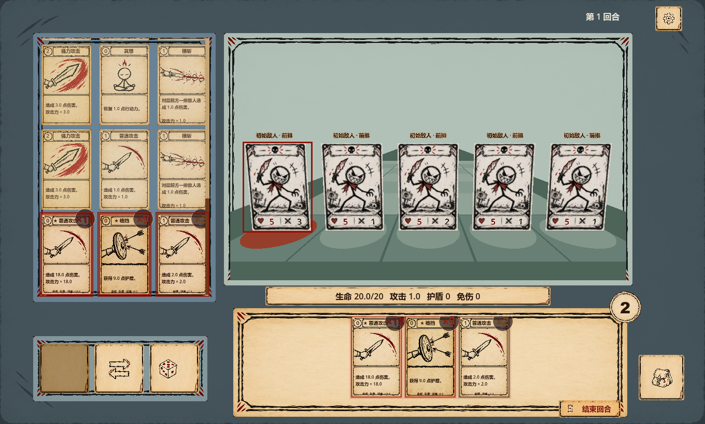

玩法规则
《阿吉与花海》围绕有限身长和花丛生长安排路线；《DELAY》的方块先记录方向力，再由装置触发移动。
身长与路径 / 储力与释放玩法 · 关卡 · 开发
你好，我是墨玡。
这里放着我参与制作的几款游戏，
包括玩法介绍、游戏画面和一些制作记录。



01 / PROJECTS
点击查看介绍和画面，
也可以下载试玩。
02 / DEVELOPMENT NOTES
《阿吉与花海》围绕有限身长和花丛生长安排路线；《DELAY》的方块先记录方向力，再由装置触发移动。
身长与路径 / 储力与释放《阿吉与花海》的五关依次加入移动、花瓣、障碍与生长机关；《DELAY》在四关中逐步加入压力门、绳索和联动方块。
关卡顺序 / 机制组合《DELAY》用关卡编辑器调整布局，《纸上地牢》通过内容库管理卡牌和道具。修改规则和数值后，再回到游戏里检查效果。
Godot / GDScript / 数据配置03 / ABOUT
目前主要使用 Godot 和 GDScript 制作游戏。这里整理了几款参与制作的项目，方便查看和试玩。
三个项目分别是网格解谜、横版机关解谜和卡牌地牢。除了游戏画面，也记下了一些规则的做法和制作时的调整。
DOWNLOADS
Windows 试玩版 · 下载后完整解压运行
当前提供 Windows 下载版，非浏览器在线试玩。
《纸上地牢》解压后请保持 EXE 与 PCK 文件在同一目录。